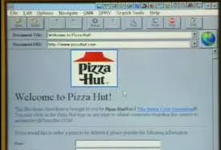

📡 Historia del Internet - Línea de Tiempo |
| 🏠 Inicio | ← Anterior: 1993 | Siguiente: 2000 → |
1995 - Internet ComercialEl Nacimiento del Comercio Electrónico

Internet se ComercializaEn 1995, Internet dejó de ser una herramienta exclusiva de académicos y científicos para convertirse en un mercado global. Este año marcó el inicio del comercio electrónico moderno, con empresas que comenzaron a vender productos y servicios en línea, transformando para siempre la forma en que compramos y hacemos negocios.
Empresas Icónicas Fundadas en 19951995 fue un año crucial para Internet porque varias empresas que hoy son gigantes tecnológicos fueron fundadas o lanzaron sus operaciones comerciales:
Amazon.com: De Garaje a GiganteJeff Bezos fundó Amazon.com el 5 de julio de 1995 en su garaje en Seattle, Washington. Inicialmente era solo una librería en línea, pero Bezos tenía una visión mucho más grande: crear la "tienda de todo" en Internet. Datos de Amazon en 1995:
eBay: El Mercado de SubastasPierre Omidyar lanzó AuctionWeb (que luego se convertiría en eBay) el 3 de septiembre de 1995. La historia cuenta que lo creó para que su novia pudiera intercambiar dispensadores de caramelos PEZ con otros coleccionistas. El Primer Artículo Vendido:El primer artículo vendido en eBay fue un puntero láser roto por $14.83. Cuando Omidyar contactó al comprador para preguntarle si sabía que estaba roto, el comprador respondió: "Soy coleccionista de punteros láser rotos". ¡Fue entonces cuando Omidyar supo que tenía algo especial! ¿Por Qué 1995 fue el Año Clave?Varios factores convergieron en 1995 para hacer posible el comercio en Internet: Factores que Permitieron el E-Commerce:
El Protocolo SSL: Seguridad en las ComprasEn 1995, Netscape introdujo el protocolo SSL, que permitía cifrar información enviada entre el navegador y el servidor. Esto hizo posible que las personas compartieran información de tarjetas de crédito de forma segura en Internet.
El Crecimiento del Comercio ElectrónicoDespués de 1995, el comercio electrónico creció de manera exponencial. Lo que comenzó con unos pocos sitios vendiendo libros y objetos de colección se convirtió en una industria multimillonaria.
Otros Hitos de 19951995 fue un año increíblemente importante para Internet por muchas otras razones: Eventos Importantes de 1995:
El Boom de las Punto-ComEl éxito de empresas como Amazon y eBay, junto con la salida a bolsa de Netscape, creó una fiebre del oro digital. Los inversionistas empezaron a invertir enormes cantidades de dinero en cualquier empresa con ".com" en su nombre, aunque muchas no tenían modelos de negocio sostenibles.
Impacto en la SociedadLa comercialización de Internet en 1995 cambió fundamentalmente la economía mundial y el comportamiento del consumidor: Cambios Provocados por el E-Commerce:
📚 Enlaces RelacionadosPara más información sobre el comercio electrónico, consulta:
|
| © 2026 - Historia del Internet | Evento: Internet Comercial 1995 |